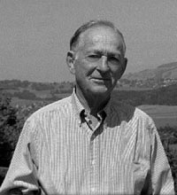
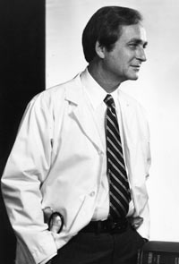
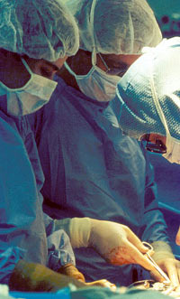

Robert C. Knapp
Dr. Knapp is the former Director of Gynecology and Gynecologic Oncology at the
Brigham and Women's Hospital and the Dana Farber Cancer Institute.
Dr. Knapp's complete CV is available as a PDF document and can be downloaded
here.
 Karsh photo 1985
 Drs. Knapp and Goodman at surgery

Dr. Knapp's Fellows at retirement dinner 1993
Research Contributions
Acute Renal Failure in Pregnancy and Septic Abortion
When I was a resident, I witnessed the appalling death rate from overwhelming
sepsis caused by illegally induced abortions. I published two papers
on the management of this problem in 1959 and 1960.1-2
Ovarian Cancer Research
The surgical evaluation of aortic lymph nodes
The surgical evaluation of the aortic lymph nodes revealed the presence of metastasis in patients who were thought to have cancer confined to the ovary. 3 Finding tumor in lymph nodes will change stage and often treatment.
Formation of Malignant Ascites in Ovarian Cancer
We used a murine model
that developed ovarian cancer and malignant ascites to assess the role of
tumor implants in the diaphragmatic lymphatic channels. These implants contributes
to the formation of malignant ascites.4-5
CA 125
The detection of an ovarian cancer antigen in the blood of patients with ovarian cancer lead to the development of an immunoassay. This test has become the standard of medical practice for evaluating a pelvic mass, monitoring a patient with ovarian cancer receiving chemotherapy and determining recurrence after the completion of therapy.6-16
Surgical Contribution
I described the dissection of the paravesical and
pararectal spaces in pelvic operations.17 This has enabled the surgeon to
simplify dissection
of the pelvic retroperitoneal both in radical operations as well as benign
surgery. This dissection is of value to prevent ureteral injury as well as
visualization of the artery and veins.
Research To Date
Assess ovarian tumor markers that could lead to the early
detection of ovarian cancer. Participate in early detection grants evaluating
women at high risk for ovarian cancer. Serve as consultant to industry
in evaluating a variety of tumor markers.18-20
Lectures and Teaching
Medical Students
I teach a session on ovarian cancer at the Weill Medical School of Cornell University. I also have a seminar session related to the patient doctor interaction. We discuss such topics as the importance of empathy, giving bad news, informed consent, truth, and the non-conforming patient.21
Physician Lectures
Lectures at medical rounds, medical conferences
and hospital meetings.